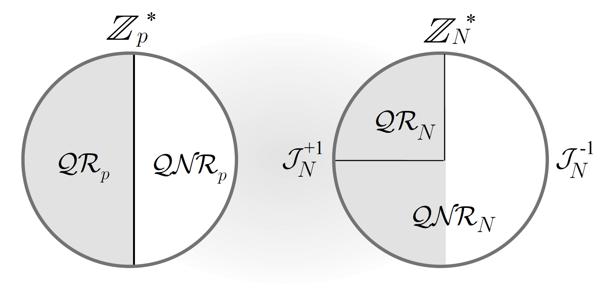
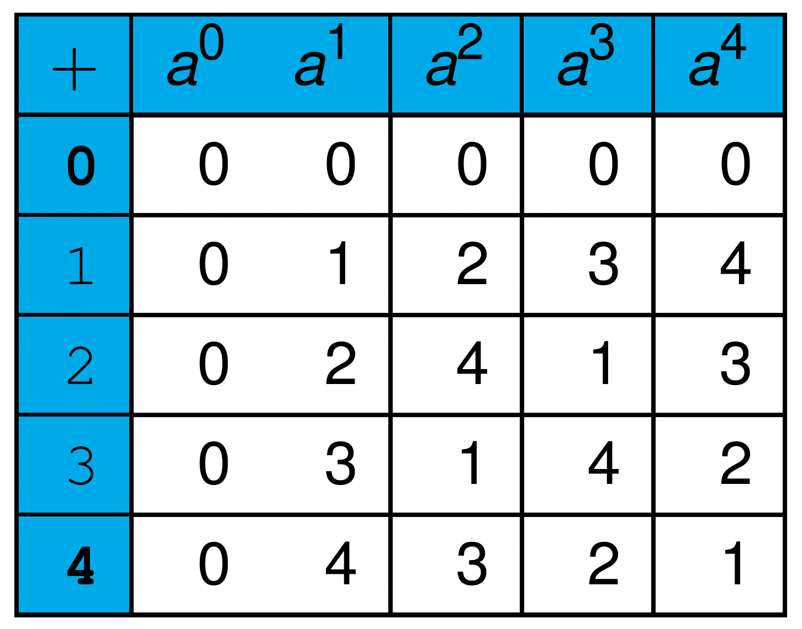

DADA2026:4-3
Defence against the Dark Arts
Fourth topic - Crypto - extra math slides
Outline
- Math for ECC
- Cyclic groups, math operations...
- Algorithms, with complexity
- Problems in \mathbb{Z}_{p} and \mathbb{Z}_{N}
Details on ECC
Outline
- Math for ECC
- Cyclic groups, math operations...
- Algorithms, with complexity
- Problems in \mathbb{Z}_{p} and \mathbb{Z}_{N}
Curve y^{2}=x^{3}+x+1\bmod23 does not “look” nice
|
|


| P+Q | Gradient \boldsymbol{\Delta} | x coordinate \boldsymbol{x_{R}} | y coordinate \boldsymbol{y_{R}} | R |
|---|---|---|---|---|
| (3,10)+(9,7) | =\frac{-3}{6}=11 | =11^{2}-3-9=17 | =11(3-17)-10=20 | (17,20) |
| (4,0)+(7,11) | =\frac{11}{3}=19 | =19^{2}-4-7=5 | =19(4-5)-0=4 | (5,4) |
Building blocks for “hardness” operations in \mathbb{Z}_{p} and \mathbb{Z}_{N}
Outline
- Math for ECC
- Cyclic groups, math operations...
- Algorithms, with complexity
- Problems in \mathbb{Z}_{p} and \mathbb{Z}_{N}
17^{\mathrm{th}} century Frenchman Pierre de Fermat

When p is a prime, if a is any non-zero number less than p, then
{a^{p-1}\bmod p=1}
.
A table showing powers-of-a for p=11:
|
|

Fermat's little theorem
- For p=11 the value is always 1 when the power gets to 10
- Somtimes the value gets to 1 earlier
- Lengths of runs are always numbers that divide evenly into 10
- A value of a for which the whole row is needed is called a generator. 2, 6, 7, and 8 are generators.
Because a to a power mod p always starts repeating after the power reaches p-1, you can do this:
{a^{x}\bmod p=a^{x\bmod(p-1)}\bmod p}
Thus modulo p in the expression requires modulo p-1 in the exponent. For p=13, then
{a^{29}\bmod13=a^{29\bmod12}\bmod13=a^{5}\bmod13}
Another example \mathrm{result}=7^{1215}\bmod13
6224702750673227370465564559079792689062398648329219130902078771092486991072740587
0651989078101738389949782679348130096777089278266013135577736536148404478380085122
2817392261341421370762400507026834564501614788818580162335818155077291900607338638
1098582099841775377667037286814739670120315712396914000184822340352355906455155667
5341024739645354137741258367626070635933104840329377905370464877106976413186542262
2995052805575842805741858026942132998022801793254945606289489407393444822846491511
9714116869895958794732026285742690180232449402567101050831149673563342958092194557
1119113124697462717311124279255445332116504914530077241996189357298508605206780120
8988083552522234194051458556732086842042388893209157040799864871901064991230860288
6575458785483803190210993511026450389154414587258074783062229406697804705969808888
2249767794049127920176330954113185559387768008167786246958079094970578719259627712
77963034877818141061473753709046271959955890872768469943 mod 13 = 5=7^{1215}\bmod13
=7^{1215\bmod12}\bmod13
=7^{3}\bmod13
=343\bmod13
=5
Quadratic residues
...a number y\in\mathbb{Z}_{p} such that y^{2}\equiv x\bmod p. Note that \sqrt{2}\mod{\,}7=3, but \sqrt{3}\mod{\,}7 doesn’t exist.
\mathbb{Z}_{p}^{*} is the multiplicative (sub) group and an element x\in\mathbb{Z}_{p}^{*} is called a QR (Quadratic Residue) if its square root exists in \mathbb{Z}_{p}. Each x\in\mathbb{Z}_{p}^{*} has either 0 or 2 square roots.
- If a is a square root of x\mod p, then so is -a\mod p.
- Exactly half of the elements in \mathbb{Z}_{p}^{*} are QR.
- a is a QR ({\color{blue}\bmod p}) iff a^{\frac{p-1}{2}}\bmod p=1 (Euler's criterion).
Computing square roots in \mathbb{Z}_{p}^{*} is computationally possible. An {\cal O}(n^{4}) randomized algorithm exists. Easier in some special cases of p, e.g. when p=3\mod 4, then
{\sqrt{x}\mod p=x^{\frac{p+1}{4}}\mod 4}
Given an x\in\mathbb{Z}_{p}^{*}, deciding whether x is a QR is computationally easy.
Identifying quadratic residues




Legendre: identifies the QR in \mathbb{Z}_{p}; a function of a and p: (\mathbb{Z}_{p})
{\begin{array}{lllll} \left(\frac{a}{p}\right) & = & a^{\frac{p-1}{2}}\mod p & = & \left\{ \begin{array}{lll} 1 & & {\color{black}\mathrm{if}\,a\,\mathrm{is\,a\,QR}}\\ -1 & & {\color{black}\mathrm{if}\,a\,\mathrm{is\,not\,a\,QR}}\\ 0 & & {\color{blue}{\color{black}\mathrm{if}\,a=0\mod p}} \end{array}\right.\end{array}}
Jacobi: is a generalization of Legendre, extending it to \mathbb{Z}_{N} (composites). (\mathbb{Z}_{N})
Easy to compute given it's prime factorization. For example, given N=p\times q with p\neq q, then
{\left(\frac{a}{N}\right)=\left(\frac{a}{p}\right)\left(\frac{a}{q}\right)}
Given a and N, we can find the Jacobi symbol without knowing the factorization of N. From the Jacobi symbol, we can’t tell whether a is a QR, but no entry with −1 is a quadratic residue.
Outline
- Math for ECC
- Cyclic groups, math operations...
- Algorithms, with complexity
- Problems in \mathbb{Z}_{p} and \mathbb{Z}_{N}
Complexity of basic arithmetic

We often work with (cyclic) groups in \mathbb{Z}_{p} and \mathbb{Z}_{N} with very large p and N.
Computational complexity: the following basic arithmetic operations can be efficiently computed in \mathbb{Z}_{p} and \mathbb{Z}_{N}:
| Operations | Complexity |
|---|---|
| Addition | {\cal O}(m) |
| Multiplication | {\cal O}(m^{2}) |
| Inverse | {\cal O}(m^{2}) |
| Exponentiation | {\cal O}(m^{3}) |
Programming issues: Since our machines work with 32 or 64-bit integers, we have libraries such as the GMP (GNU Multiple Precision) library, and Java “BigInteger” classes.
On finding generators:
gens=[]
for s in facs:
g=2
generators=[]
while g<s[0]:
gen=1
for j in s[1]:
if (g**((s[0]-1)/j))%s[0]==1:
gen=0
break
if gen:
generators.append(g)
g=g+1
gens.append([s[0],generators])
- Find prime factors q_{1},q_{2},\ldots of \phi(p).
- Select a random candidate a.
- For each factor q_{i}, calculate a^{\frac{p-1}{q_{i}}}\bmod p. If any one is 1, then back to step 2.
- Otherwise a is a generator.
CRT - the Chinese Remainder Theorem

There are certain things whose number is unknown. Repeatedly divided by 3, the remainder is 2; by 5 the remainder is 3; and by 7 the remainder is 2. What will be the number?
Two simultaneous congruences n=n_{1}\,\mathrm{mod}\,m_{1} and n=n_{2}\,\mathrm{mod}\,m_{2} are only solvable when n_{1}=n_{2}\,\mathrm{mod}\,(\mathrm{gcd}(m_{1},m_{2})). The solution is unique modulo \mathrm{lcm}(m_{1},m_{2}).
It demonstrates to us that a number less than the product of two primes can be uniquely identified by its residue modulo those primes. It is useful in RSA.
Outline
- Math for ECC
- Cyclic groups, math operations...
- Algorithms, with complexity
- Problems in \mathbb{Z}_{p} and \mathbb{Z}_{N}
Easy problems in \mathbb{Z}_{p}
- Basic math:
-
Generating a random element, adding and multiplying elements, finding inverse, exponentiation.
- QR:
-
Testing if an element is a QR and computing its square root mod p if it is QR.
- DDH:
-
Decisional Diffie-Hellman problem: Let g be a generator of a cyclic group {\cal G}. Given a positive integer 3-tuple (a,b,z), distinguish with probability greater than 0.5 whether the three outputs are from process A or B:
- A:
Output (g^{a},g^{b},g^{z})
- B:
Output (g^{a},g^{b},g^{ab})
For the group \mathbb{Z}_{p}^{*}, DDH is not hard (...use the Jacobi symbol).
Believed to be hard problems in \mathbb{Z}_{p}
- DL:
-
Discrete log problem: Let g be a generator of a cyclic group. Given x, find r such that x=g^{r}.
- CDH:
-
Computational Diffie-Hellman problem: Let g be a generator of a cyclic group. Given g^{a}, g^{b}, find g^{ab}.
- Diffie-Hellman key exchange
- Elgamal public key encryption
- DL-based digital signatures like Elgamal, DSA, DSS...
A little more on bilinear maps/pairings
| G\rightarrow |  | G_{T}\rightarrow |  |
The groups G=\mathbb{Z}_{5}^{+} and G_{T}=\left\langle 3\right\rangle _{11}, with e(u,v)=3^{uv}(\bmod11):
{\begin{array}{lll} e(4,3) & = & 3^{12}\bmod11\\ & = & 9 \end{array}}
and
{\begin{array}{lll} e(4+4,3) & = & e(4,3)^{2}\\ & = & e(4,3)\times e(4,3)\\ & = & 3^{24}\bmod11\\ & = & 4\\ & = & e(4,3+3) \end{array}}
This is not too useful because groups like this tend to be invertible.
Presented as one-way functions

- DL:
-
Discrete Logarithm: With prime p and an element g\in\mathbb{Z}_{p}^{*} of large order, f(x)=g^{x}\bmod p. It is linear: Given a\in\mathbb{Z}, f(x) and f(y), it is easy to compute f(ax) and f(x+y). Its one-wayness is essential for the Diffie-Hellman key exchange protocol and Elgamal public key systems.
- RSA:
-
Let e be an integer such that gcd(e,N)=1, f(x)=x^{e}\bmod N. Note that given the factorization of N, the function f can be inverted efficiently. The one-wayness property is essential for the RSA public key system.
- Rabin:
-
f(x)=x^{2}\bmod N This function is one-way if there is no efficient algorithm to factor N. The function can be inverted efficiently if the factorization of N is known. The one-wayness property is essential for Rabin’s scheme.
Summary

- Multiplicative inverses may not exist in modulo arithmetic. For a modulus N and a number x, x^{-1} exists iff gcd(x,N)=1.
- CRT gives a mapping from \mathbb{Z}_{N} to \mathbb{Z}_{p}\times\mathbb{Z}_{q}.
- Some problems are easy in \mathbb{Z}_{p} but the same problems become difficult in \mathbb{Z}_{N} if the factorization of N is unknown.
- Some problems, in particular Discrete Log, are hard in both.
- Factorization and Discrete Log are the two main types of problems. Many cryptosystems depend on their “hardness”.